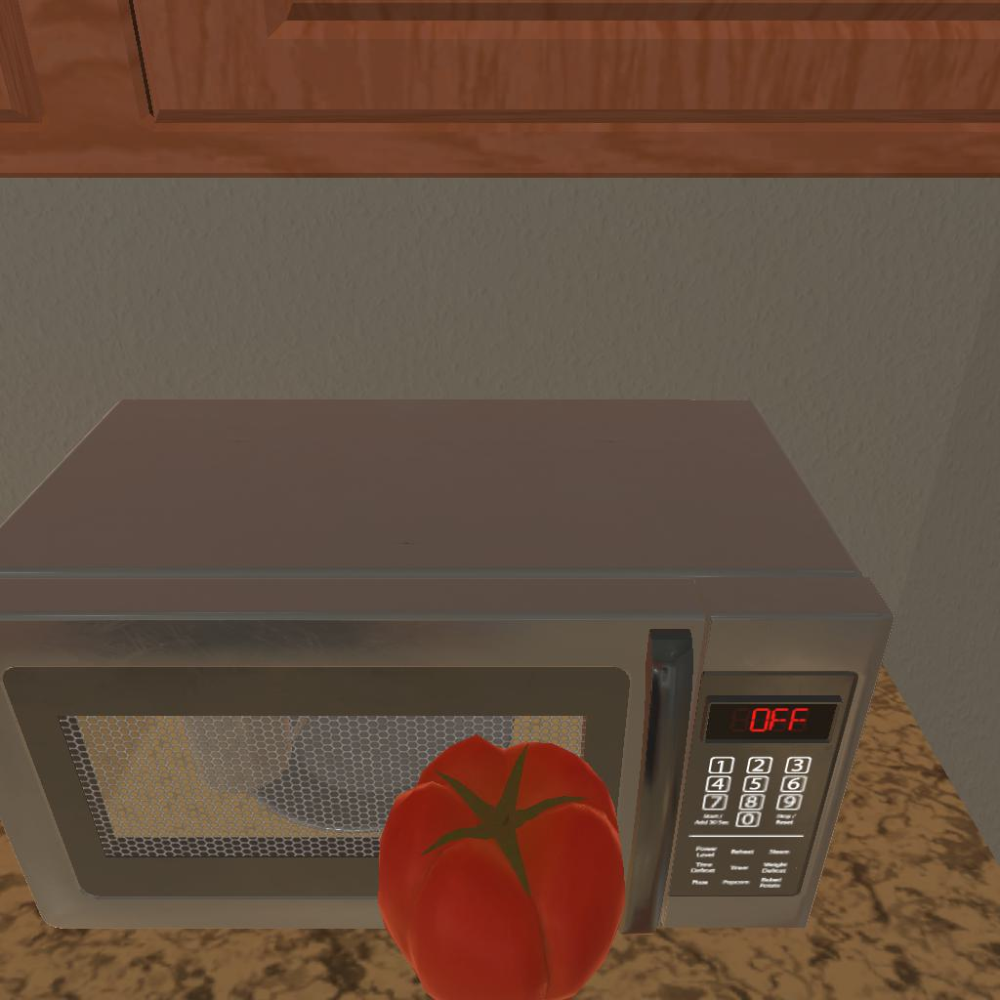

---------------------------------------------------------task: 19---------------------------------------------------------
--------------------------------------------------------------------------------------------------------------------------------------------------------------------
--------------------------------------------------------------------------------------------------------------------------------------------------------------------
Step:--------------------------------------------------------------------------15-------------------------------------------------------------------------------
----------------------------------------
VLM Prompt:
Image1:
Image2:
**Instruction**
1. Analyze the provided images to identify all visible household objects and compare the difference between images (e.h. whether the object is opened or not and taken on hand or not), focusing on those relevant to the task description "cool some tomato and put it in microwave."
2. Use the analysis of images and the task hint "The agent must find an object of the desired type, pick it up, go to a fridge, cool the object with the fridge, then find the correct location to place it, and put it down there. The agent does not need to use the fridge button or open the fridge to cool the object, and the agent just needs to do action that is "cool the object with the fridge"." to answer the question: what is the most reasonable action in the choices for the task description "cool some tomato and put it in microwave"?
3. Decide and write the answer using the template: The answer is: (i): , where i is the real number. If there is no desired object in images, search every place based on **Initial Observation** to find the object. And if no one is exactly correct, choose a similar answer.
**Initial Observation**
You are in the middle of a room. Looking quickly around you, you can see cabinet (1-15), fridge (1), countertop (1-4), drawer (1-4), microwave (1), toaster (1), coffeemachine (1), garbagecan (1), sink (1), stoveburner (1-3), sinkbasin (1)
**Answer Choices**
(1): go to cabinet 1
(2): go to cabinet 2
(3): go to cabinet 3
(4): go to fridge 1
(5): go to countertop 1
(6): go to cabinet 4
(7): go to cabinet 5
(8): go to cabinet 6
(9): go to cabinet 7
(10): go to drawer 1
(11): go to drawer 2
(12): go to cabinet 8
(13): go to drawer 3
(14): go to cabinet 9
(15): go to cabinet 10
(16): go to drawer 4
(17): go to cabinet 11
(18): go to toaster 1
(19): go to cabinet 12
(20): go to cabinet 13
(21): go to cabinet 14
(22): go to cabinet 15
(23): go to countertop 2
(24): go to coffeemachine 1
(25): go to garbagecan 1
(26): go to countertop 3
(27): go to countertop 4
(28): go to sink 1
(29): go to stoveburner 1
(30): go to stoveburner 2
(31): go to stoveburner 3
(32): go to sinkbasin 1
(33): open microwave 1
(34): close microwave 1
(35): heat tomato 1 with microwave 1
(36): examine tomato 1
(37): examine microwave 1
**Answer**
Let's think step by step by following the instructions.
----------------------------------------
----------------------------------------
Original Response:
Based on the task description "cool some tomato and put it in microwave" and the images provided, we can observe the following:
Image1:
- We can see a tomato on the fridge, which has not been cooled yet as it is not inside the fridge.
- The microwave is not visible in this image.
Image2:
- The tomato is now positioned in front of the microwave, which indicates that it has been moved from the fridge.
- The microwave is visible and its door is closed with the display reading "OFF."
The task hint clarifies that the agent does not need to use the fridge button or open the fridge to cool the object. The action is simply "cool the object with the fridge."
From the initial observation, there is only one fridge mentioned, which is "fridge (1)." Since the tomato has already been moved from the fridge to in front of the microwave between Image1 and Image2, the next reasonable action for the task would be to open the microwave to place the cooled tomato inside.
Based on the provided answer choices, the action that corresponds to opening the microwave is:
(33): open microwave 1
Therefore, the answer is:
The answer is: (33): open microwave 1
----------------------------------------
----------------------------------------
>>> Refine Original VLM Response and Get Pure Action: open microwave 1
----------------------------------------
-----------------------------------------------------------------
Running time: 13.938083410263062 seconds
Total Money: 9.64
-----------------------------------------------------------------
-----------------------------------------------------------------
Text Observation:You open the microwave 1. The microwave 1 is open. In it, you see a mug 2, and a potato 1.
-----------------------------------------------------------------
UNSUCCEED